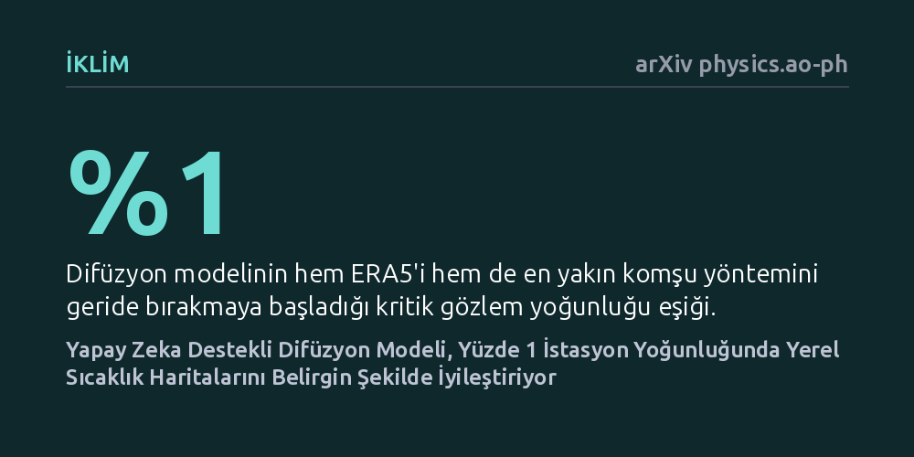

IKLIM · arXiv physics.ao-ph · 2026-09-11
Araştırmacılar, yerel sıcaklıkları yüksek çözünürlükte haritalamak için seyrek istasyon verilerinin yapay zeka difüzyon modellerini yönlendirip yönlendiremeyeceğini inceledi. Geliştirilen yöntem, istasyon yoğunluğu yüzde bire ulaştığında ek eğitime gerek kalmadan mevcut modellerden belirgin şekilde daha doğru sonuçlar verdi.
Aşırı sıcak hava dalgalarının mahalle düzeyindeki gerçek riskini belirlemek için binlerce yeni meteoroloji istasyonu kurmak yerine, eldeki seyrek ölçümleri üretken yapay zekayla birleştirerek yüksek çözünürlüklü haritalar elde etmenin mümkün olduğunu gösteriyor.

Yaz aylarında yaşanan aşırı sıcak hava dalgaları, insan sağlığı ve kentsel yaşam üzerinde doğrudan bir tehdit oluşturuyor. Ancak bir kentin ya da bölgenin hissettiği sıcaklık her sokakta aynı olmuyor; tepeler, vadiler, betonlaşma yoğunluğu ve yeşil alanlar sıcaklığın birkaç kilometre içinde ciddi biçimde değişmesine yol açıyor. Günümüzde yaygın olarak kullanılan küresel iklim modelleri ve ERA5 gibi yeniden analiz ürünleri, atmosferi geniş ızgaralar halinde ele aldığı için bu yerel yüzey farklılıklarını yakalayamıyor.
Yerel sıcaklığı doğru ölçmenin en kesin yolu yeryüzüne sık aralıklarla meteoroloji istasyonları yerleştirmek olsa da, geniş coğrafyalara bu tür yoğun ağlar kurmak ve işletmek maliyet açısından neredeyse imkansız. Araştırmacılar bu nedenle kritik bir soruya odaklanıyor: Geniş ölçekli kaba iklim verileri ile sahadaki çok az sayıdaki seyrek ölçüm istasyonunu akıllıca birleştirerek, mahalle ölçeğinde yüksek çözünürlüklü sıcaklık haritaları üretmek mümkün mü?
Araştırma ekibi bu soruyu çözmek için son yıllarda görüntü üretiminde öne çıkan difüzyon modellerinden yararlanan bir benzetim sistemi kurdu. Model; arazinin topografyası, geçmiş iklim ortalamaları, güneş açısı, zaman özellikleri ve ERA5 kaba sıcaklık verileriyle beslenerek eğitildi. Böylece sistem, geniş ölçekli bir sıcaklık alanının yüksek çözünürlükte fiziksel olarak nasıl görünebileceğine dair güçlü bir önsel kavrayış geliştirdi.
Yaklaşımın asıl can alıcı noktası ise çıkarım aşamasında uygulanan skor tabanlı veri asimilasyonu oldu. Geleneksel yaklaşımlar her yeni ölçüm kombinasyonunda yapay zekayı sıfırdan veya ek verilerle yeniden eğitme ihtiyacı doğururken, bu çalışmada türetilebilir bir olasılık fonksiyonu kullanıldı. Bu matematiksel kılavuz, modelin ürettiği yüksek çözünürlüklü sıcaklık alanını sahada mevcut olan az sayıdaki gerçek ölçüm noktasına doğru pürüzsüzce büktü; yani yapay zeka hiçbir ek eğitim almadan gerçek ölçümlerle aynı hizaya getirildi.
Yöntemin başarısı, AORC veri seti üzerinde oluşturulan 32 farklı sentetik ızgara vakasında titizlikle sınandı. Testlerde, yapay zekanın yönlendirildiği sonuçlar hem kaba ERA5 verileriyle hem de sahadaki gözlemleri en yakın komşuya yayan güçlü doğrusal yaklaşımlarla kıyaslandı. Elde edilen bulgular, gözlem istasyonlarının yoğunluğu ızgara hücrelerinin en az yüzde 1'ine ulaştığında, yönlendirilmiş difüzyon modelinin 32 vakanın tamamında alternatiflerini geride bıraktığını ortaya koydu. Model, hata karekökü değerini (RMSE) 0,431 Kelvin seviyesinden 0,318 Kelvin seviyesine düşürerek belirgin bir doğruluk artışı sağladı.
Ancak çalışma madalyonun diğer yüzünü de gösterdi: İstasyon yoğunluğu yüzde 1'in altında kaldığında, doğrudan enterpolasyon yöntemleri hala daha güvenilir sonuçlar veriyordu. Ayrıca araştırmacılar, yönlendirme kuvveti ile gözlem sıklığı arasındaki ilişkiyi haritalandırarak önemli bir dinamik keşfetti. Modele verilen yönlendirme kuvveti gereğinden fazla artırıldığında tahmin kalitesinde ani ve keskin bir bozulma yaşanıyordu; bu durum yöntemin körü körüne değil, istasyon yoğunluğuna göre ayarlanmış hassas bir işletim reçetesiyle kullanılması gerektiğini kanıtladı.
Elde edilen bu yüksek çözünürlüklü 2 metre sıcaklık haritaları, özellikle sıcak hava dalgası uyarı sistemleri, belirli sıcaklık eşiklerinin aşılması ve kümülatif ısı yükü gibi kritik afet yönetimi analizlerinde temel bir altlık olarak planlanıyor. Seyrek istasyon verisini fiziksel coğrafyayla birleştiren bu yaklaşım, gelecekte kentsel planlama ve halk sağlığı müdahalelerinde mahalle bazlı erken uyarılar geliştirmeye zemin hazırlayabilir.
Bununla birlikte çalışmanın mevcut hali henüz kontrollü sentetik bir ızgara üzerinde doğrulanmış bir kavram kanıtı niteliğinde. Yazarların da vurguladığı gibi, yöntemin operasyonel hava tahmini sistemlerine entegre edilebilmesi için gerçek yer istasyonu ağlarında ve modelin eğitiminde yer almayan farklı yıllara ait uç hava olaylarında kapsamlı şekilde test edilmesi gerekiyor.